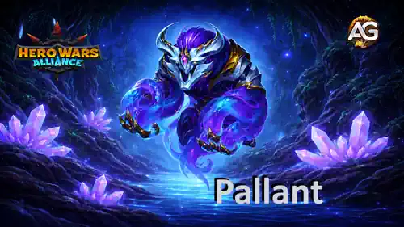
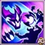
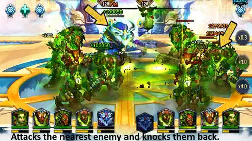
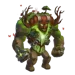
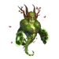

Pallant est le Titan Élarite que les équipes de Terre attendaient : un véritable tank de première ligne doté d'une Santé énorme et d'une compétence ultime perturbatrice. Au lieu de simplement absorber les attaques, il transforme l'ennemi le plus proche en projectile, repousse ce Titan vers l'arrière et blesse chaque adversaire pris sur sa trajectoire.
Ma première impression est que Pallant peut renforcer un noyau de Terre déjà puissant tout en ouvrant la voie à des équipes Élarites complètes. Dans ce guide, je vais vous montrer comment fonctionne Bélier Élarite, où investir en premier, quels Titans de Feu le punissent et ce que les tests fournis au niveau maximal nous apprennent réellement.

Pallant appartient à la fois aux éléments Élarite et Terre. Cette double identité lui permet de diriger des Titans de Terre connus comme Angus, Eden, Verdoc, Sylva et Avalon, tout en formant un premier noyau Élarite avec Alecto et Orm.
Son kit repose sur le contrôle du positionnement. Bélier Élarite attaque l'ennemi le plus proche, pousse cette cible à travers la formation et punit les adversaires qui se trouvent sur la trajectoire de collision. Pallant est donc bien plus qu'un mur : il peut désorganiser la ligne ennemie et créer une pression de zone depuis la première ligne.
Pallant est un tank de première ligne possédant les éléments Élarite et Terre. Son rôle consiste à protéger la formation grâce à une immense réserve de Santé, puis à utiliser Bélier Élarite pour repousser l'ennemi le plus proche. La cible en mouvement devient alors la source des dégâts de collision infligés à ses propres alliés.
Dans les équipes de Terre, Pallant ajoute un autre combattant résistant en première ligne avec un contrôle actif. Dans les équipes Élarites, il remplit le rôle de tank aux côtés des dégâts d'Alecto et du soutien d'Orm, laissant deux places flexibles pour des Super Titans jusqu'à l'arrivée de nouveaux alliés Élarites.
Voici les statistiques maximales de Pallant au niveau 120, d'après les valeurs fournies dans son fichier de données :
La valeur la plus remarquable est la Santé de 16,213,343 de Pallant. Son Attaque physique est inférieure à celle d'un Tireur spécialisé, mais Bélier Élarite utilise de puissants multiplicateurs de 200% et 300%. Chaque amélioration de l'Attaque physique conserve donc un effet significatif.
Bélier Élarite est facile à reconnaître, mais comporte deux événements de dégâts distincts. Comprendre cette différence est essentiel pour utiliser Pallant correctement.

Description en jeu : Attaque l'ennemi le plus proche et le repousse. Pendant son déplacement, l'adversaire inflige des dégâts à tous les ennemis sur sa trajectoire.
Cible : Ennemi le plus proche
Dégâts de repoussement : 853,157
Formule : (200% de l'Attaque physique).
Dégâts de collision : 1,279,735
Formule : (300% de l'Attaque physique).
Explication de la compétence : Pallant frappe d'abord l'ennemi le plus proche et force ce Titan à reculer. Ce premier coup inflige les dégâts de repoussement. Pendant que la cible se déplace, chaque ennemi pris sur sa trajectoire peut subir les dégâts de collision, qui sont plus élevés.
Le calcul utilise l'Attaque physique maximale de Pallant, soit 426,578. Les valeurs affichées dans le jeu sont de 853,157 pour le repoussement et de 1,279,735 pour une collision. Les écarts d'un point par rapport à la multiplication directe proviennent de l'arrondi interne du jeu.
Repoussement : (426,578 x 200%) = 853,157 dégâts affichés
Collision : (426,578 x 300%) = 1,279,735 dégâts affichés
Pourquoi cela compte en PVP : Bélier Élarite est plus puissant lorsque les Titans ennemis sont regroupés derrière leur tank. Pallant peut pousser la cible la plus proche à travers cette formation, créer des dégâts de zone et perturber le placement adverse. Face à une formation dispersée, le premier coup fonctionne toujours, mais moins d'ennemis risquent d'être touchés par les collisions.

Conseil stratégique d'Alexandre : Ne jugez pas Pallant uniquement sur les dégâts infligés à la cible la plus proche. Sa vraie valeur vient de la combinaison entre résistance, déplacement et pression de collision. Plus les ennemis sont alignés derrière le Titan de première ligne, plus Bélier Élarite devient dangereux.
Les deux skins de Pallant ajoutent la même quantité de Santé au niveau 60. Leur ordre visuel est conservé ci-dessous, tandis que la priorité reflète le parcours d'amélioration le plus efficace pour un tank.
Santé : +2,627,975
Le Skin par défaut renforce directement la mission principale de Pallant : survivre assez longtemps en première ligne pour utiliser Bélier Élarite à plusieurs reprises.
Priorité d'évolution pour le PVP : Très élevée - Améliorez ce skin en premier, car la Santé renforce Pallant dans chaque affrontement et établit sa résistance fondamentale.
Priorité d'évolution pour le Donjon : Très élevée - Plus de Santé donne à un tank davantage de régularité dans les longs combats du Donjon.
Santé : +2,627,975
Le Skin primordial accorde exactement le même total de Santé que le Skin par défaut. Il représente un puissant deuxième investissement en résistance une fois le premier skin développé.
Priorité d'évolution pour le PVP : Élevée - La statistique est excellente, mais elle arrive en deuxième position puisque le Skin par défaut offre déjà le même avantage.
Priorité d'évolution pour le Donjon : Élevée - Développez-le après le Skin par défaut afin d'accumuler encore plus de Santé pour les longs combats.
Résumé de la priorité des skins :
1er : Skin par défaut - Santé pour la résistance essentielle de Pallant en tant que tank.
2e : Skin primordial - le même bonus de Santé, ajouté après le premier skin.
Pallant utilise trois artefacts Élarites. Gardez leur ordre visuel à l'esprit, mais, pour l'investissement, je place d'abord le Sceau pour ses statistiques universelles de tank, puis l'Arme pour la régénération de l'équipe et enfin la Couronne pour certains affrontements contre la Lumière et les Ténèbres.
Chance d'activation : 100%
Durée du buff d'équipe : 9 secondes
Régénération de Santé : +100,050
Lorsque Pallant utilise Bélier Élarite, le Grimoire de Zorval déclenche pendant 9 secondes un bonus de Régénération de Santé pour toute l'équipe. Au niveau 120, sa chance d'activation est de 100%, chaque ultime crée donc une période de régénération fiable pour les cinq Titans.
Priorité d'évolution pour le PVP : Élevée - Une régénération garantie pour l'équipe est précieuse, surtout dans les équipes de Terre conçues pour survivre et contrôler les combats prolongés.
Priorité d'évolution pour le Donjon : Très élevée - La Régénération de Santé pour toute l'équipe est extrêmement utile lorsque la résistance sur plusieurs combats est importante.
Dégâts supplémentaires contre les Titans de Lumière et de Ténèbres : +213,000
Défense supplémentaire contre les Titans de Lumière et de Ténèbres : +120,600
La Couronne Élarite rend Pallant plus puissant contre les Titans de Lumière et de Ténèbres, aussi bien en attaque qu'en défense. Elle n'apporte rien contre les adversaires de Terre, d'Eau ou de Feu. Sa priorité générale doit donc rester inférieure à celle du Sceau universel et de l'Arme qui renforce l'équipe.
Priorité d'évolution pour le PVP : Moyenne - Puissante dans deux affrontements élémentaires, mais il existe cinq groupes d'éléments de Titans et le bonus reste inactif contre trois d'entre eux.
Priorité d'évolution pour le Donjon : Moyenne - Améliorez-la après l'Arme et le Sceau, car sa valeur dépend de l'élément ennemi.
Attaque physique : +82,500
Santé : +4,575,000
Il s'agit de l'artefact le plus universel de Pallant. Le grand bonus de Santé renforce son rôle de tank, tandis que l'Attaque physique augmente les deux parties de Bélier Élarite.
Impact sur la formule : (+82,500 x 200%) = +165,000 dégâts de repoussement et (+82,500 x 300%) = +247,500 dégâts de collision.
Priorité d'évolution pour le PVP : Très élevée - La Santé et l'Attaque physique fonctionnent dans chaque affrontement et améliorent à la fois son rôle principal et sa compétence.
Priorité d'évolution pour le Donjon : Très élevée - La résistance et les dégâts universels en font l'artefact le plus fiable de Pallant sur plusieurs combats.
Résumé de la priorité des artefacts :
1er : Sceau de Défense Chthonien - Santé et Attaque physique dans chaque affrontement.
2e : Grimoire de Zorval - Régénération de Santé garantie pour l'équipe après Bélier Élarite.
3e : Couronne Élarite - puissante contre les Titans de Lumière et de Ténèbres, mais situationnelle.
Dans mes tests de combat, les Titans de Feu sont la principale faiblesse de Pallant. La formation counter la plus importante réunit Moloch, Vulcan, Araji, Asherona et Ignis, et elle a battu l'équipe de Terre de Pallant au niveau maximal. Les Titans ci-dessous sont présentés par ordre alphabétique.
Araji : Dans la formation de Feu testée, Araji fournit la forte pression offensive nécessaire pour traverser l'immense réserve de Santé de Pallant. Il est plus efficace ici au sein de la composition de Feu complète que comme réponse individuelle garantie.
Asherona : Asherona renforce le noyau de Feu testé et ajoute de la pression pour aider la formation à vaincre Pallant avant que les activations répétées de Bélier Élarite et la régénération de l'Arme ne stabilisent ses alliés de Terre.
Ignis : Ignis accélère le rythme offensif de l'équipe de Feu. Cette pression supplémentaire est importante contre un tank possédant plus de 16 millions de Santé, car des dégâts trop lents donnent à Pallant davantage de temps pour contrôler la ligne et déclencher la régénération de l'équipe.
Moloch : Moloch offre à l'équipe counter sa propre présence en première ligne, empêchant Pallant de contrôler librement les personnages fragiles qui infligent des dégâts. Son rôle consiste à maintenir la formation pendant que le reste de l'équipe de Feu exerce sa pression.
Vulcan : Vulcan apporte une autre source de dégâts de Feu soutenus. Avec Araji et Asherona, il aide à convertir la protection de Moloch et le soutien d'Ignis en dégâts suffisants pour venir à bout de Pallant.
L'équipe de Terre est la formation la mieux éprouvée de Pallant. Ces trois formations permettent de choisir entre les dégâts de Sylva, la pression supplémentaire d'Angus en première ligne et le soutien défensif d'Avalon selon l'équipe adverse.
Il s'agit de l'équipe principale des tests fournis au niveau maximal. Pallant tient le rôle de tank, Angus ajoute de la pression en première ligne, Verdoc soutient le noyau de Terre, Eden apporte du contrôle et des dégâts explosifs, tandis que Sylva contribue avec des dégâts de Terre soutenus.
| Meilleure équipe de Terre de Pallant - Hero Wars Alliance | ||||
|---|---|---|---|---|
| Sylva | Eden | Verdoc |
 Angus |
Pallant |
Dans cette formation, Pallant remplace complètement Angus comme tank, ce qui permet d'ajouter Avalon tout en conservant Sylva comme principale source de dégâts. Grâce à son troisième skin, Sylva est très efficace contre la Lumière. Le troisième skin d'Avalon offre une défense supplémentaire contre les Ténèbres, en plus de ses boucliers et de ses soins. Comme un tank Élarite résistant à la Lumière et aux Ténèbres est déjà en première ligne, les boucliers et les soins d'Avalon peuvent être encore plus importants que sa défense supplémentaire contre les Ténèbres.
| Équipe de Terre avec Pallant, Sylva et Avalon - Hero Wars Alliance | ||||
|---|---|---|---|---|
| Sylva | Eden | Verdoc |
 Avalon |
Pallant |
Cette formation défensive de Terre place Angus aux côtés de Pallant en première ligne et remplace Sylva par Avalon. Angus ajoute de la pression de zone et un second tank résistant, tandis qu'Avalon apporte des boucliers, des soins et une défense supplémentaire contre les Ténèbres. Eden reste la principale source de contrôle et de dégâts explosifs, avec Verdoc pour soutenir le noyau de Terre.
Faible contre : La formation de Feu complète composée de Moloch, Vulcan, Araji, Asherona et Ignis. Elle a battu l'équipe de Terre de Pallant 7-3 lors du test fourni au niveau maximal.
Considérations stratégiques : Sylva est généralement le meilleur choix offensif contre les équipes de Lumière, tandis qu'Avalon apporte davantage contre les équipes de Ténèbres. La deuxième formation combine ces deux avantages en permettant à Pallant de remplacer complètement Angus ; la troisième sacrifie les dégâts de Sylva pour associer la résistance d'Angus au soutien défensif d'Avalon.
Pallant mérite toute l'attention des joueurs qui investissent déjà dans les Titans de Terre. Son immense Santé, son rôle en première ligne et Bélier Élarite offrent aux équipes de Terre un tank résistant, également capable de perturber le positionnement et de créer des dégâts de collision.
Pour les skins, améliorez d'abord le Skin par défaut, puis le Skin primordial. Tous deux donnent +2,627,975 de Santé. Pour les artefacts, je recommande de commencer par le Sceau de Défense Chthonien pour sa Santé et son Attaque physique universelles, puis le Grimoire de Zorval pour la régénération garantie de l'équipe, et enfin la Couronne Élarite pour les affrontements contre la Lumière et les Ténèbres.
La formation de Pallant la plus puissante lors des tests est le noyau de Terre composé de Sylva, Eden, Verdoc et Angus. Deux alternatives puissantes ajoutent Avalon : Pallant peut remplacer complètement Angus tandis que Sylva reste la principale source de dégâts, ou Angus peut rester aux côtés de Pallant dans une formation plus défensive sans Sylva. Choisissez Sylva pour exercer davantage de pression contre les équipes de Lumière et Avalon pour obtenir plus de soutien contre les équipes de Ténèbres.
Mon conseil est de développer Pallant si la Terre fait partie de vos éléments principaux, mais continuez à tester avant de qualifier une formation d'imbattable. La défaite 7-3 contre le Feu et la défaite 8-2 contre les Ténèbres montrent exactement pourquoi la connaissance des affrontements compte autant que l'investissement brut.
Avez-vous aimé notre Guide du Titan Pallant ? Y a-t-il quelque chose que vous n'avez pas compris ou une modification que vous aimeriez suggérer ? Rejoignez la section des commentaires sur Alexandre Games et partagez votre avis, vos questions et vos résultats de combat.
Cliquez sur le bouton ci-dessous pour commencer :